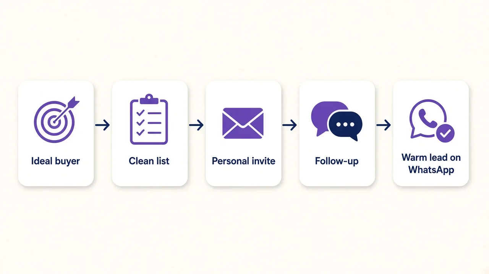

LinkedIn lead generation services in India find the right decision makers at the businesses you sell to, start personal conversations with them on LinkedIn and hand you the ones who show real interest. For a B2B founder or sales head, the best service is the one that brings qualified conversations, not just invites sent, and shows you every step.
This guide is for founders, sales heads and operations heads at Indian B2B companies. You might make building materials, run a software firm, sell industrial parts, offer consulting or coach business owners. Your buyers are owners, directors and managers at other companies, and most of them are on LinkedIn every week.
You already know that one good meeting can be worth months of effort. What you do not have is a person with the time to find the right buyers, write a personal note to each one, follow up three times and keep track of who said what. That is the gap a LinkedIn lead generation service fills.
It is not for consumer brands that want more followers, or for anyone who needs a person to design and post content. This page is only about outreach that turns into sales calls.
Most services in India follow the same basic steps, even if they use different names for them:
Where services differ is in who does each step, how personal the messages are, how fast warm replies get answered and how much you can see. Those differences decide whether you get real buyers or a full inbox of people who will never buy.
The market for LinkedIn lead generation services India-wide is crowded, but almost every offer falls into one of three types.
An automation tool sends invites and messages from templates. It is quick to start, but someone in your team must choose the list, write the messages, read every reply and fix the campaign when replies dry up. If nobody has those hours, the tool sends more of the wrong messages.
A team of people runs outreach for you. Good agencies bring experience, but they serve many clients at once, so changes can take days, and reports are often a monthly summary. Many agencies still use automation tools underneath, so account risk does not disappear. Our comparison of LinkedIn automation vs a LinkedIn agency goes deeper on these two.
An AI agent does the daily work: it reads each prospect's profile, writes a message for that person, follows up and replies in your tone. A person sets it up, checks the rules and watches the results. You get the steady pace of software and the judgement of a human, and you only spend time on people who want to talk.
| Question | Software you run | Outreach agency | Managed AI agent (Clara AI) |
|---|---|---|---|
| Who does the daily work? | Your team | The agency team | The agent, set up and watched by Clara AI |
| How personal are messages? | Templates with blanks | Depends on the writer | Written for each prospect from their profile |
| How fast are warm replies answered? | When you find time | Often hours or days | The agent replies, and you get the lead on WhatsApp |
| What can you see? | Tool dashboard | Monthly report | Every invite, reply and lead, tracked |
| Best for | Teams with spare hands | Teams that want to hand off fully | B2B teams that want qualified calls without running it |

The Clara AI LinkedIn Outreach Agent is built for Indian and global B2B companies that want conversations with decision makers. Here is how it works:
A person at Clara AI sets up the agent, checks its messages and watches the numbers. That is the human part. The AI part is the daily work no busy founder has time for.
Results depend on your market, your offer and how sharp your ideal buyer is. Here is what two real users saw. Haique Surfaces, as of 21 Oct 2026, had 345 people reached, 107 accepted (31%) and 14 replies. Sanjeet Ray, a business coach, in October 2026 had 149 invites, 43 connections, 12 conversations and 3 warm leads.
Look at what these numbers measure. Invites sent is the easy number. Acceptances show your targeting is right. Replies and conversations show your message works. Warm leads are the number that pays for the service. When you compare vendors, ask for all four, with dates.
These questions sort good vendors from risky ones quickly:
Our checklist on how to choose an AI development company has more questions that apply to any AI vendor.
It is likely a good fit if you sell to other businesses, one new client is worth a meaningful amount, your buyers are on LinkedIn, and nobody in your team has spare hours for outreach. It is likely not a fit if you sell low-value consumer products, want followers rather than meetings, or have no budget for a paid monthly service.
If you are still working out what kind of AI help you need, our guide on what a custom AI agent is explains the basics.
Come with answers to three short questions: what is your goal for LinkedIn outreach, who signs off on the decision, and what is your timeline? Add a short note on who your best customers are today. That is enough for us to show you a first demo within 7 days.
When you message us on WhatsApp, tell us what your business does and what you want the agent to achieve. If we are not a fit, we will tell you straight away.